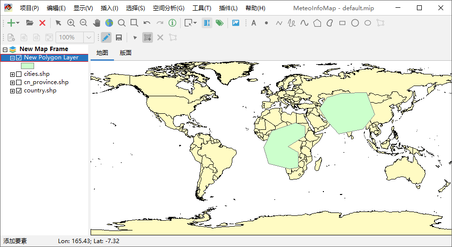
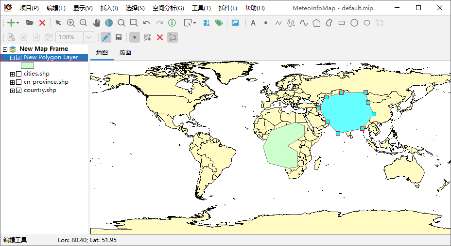
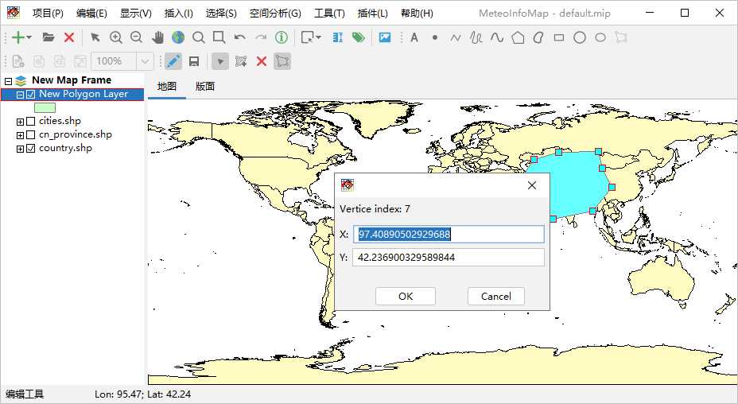

添加和编辑空间要素¶
选中新创建的图层名，点击工具栏中的“切换编辑状态”按钮，则该图层处于可编辑状态，这时图层名周边有红色框。选择“添加要素”按钮， 可以用鼠标在地图上添加多边形。
点击“编辑工具”按钮，可以用鼠标在选择图层中的多边形，再点击“编辑要素节点”按钮可以对要素的节点进行编辑，鼠标放在两个节点之间 的线段上且鼠标光标变为增加节点光标时可以双击增加节点，鼠标在节点上且光标变为移动节点的光标时可以通过鼠标拖动来编辑节点位置。
鼠标在节点上且光标变为移动节点光标时点击鼠标右键，有编辑节点（Edit Vertice）和删除节点（Remove Vertice）右键菜单， 选择编辑节点菜单出现节点坐标编辑对话框，可以对节点的坐标精确编辑。
再次点击“编辑要素节点”退出节点编辑。